Research
My research program is centered on a fundamental question: how do some neuronal circuits remain resilient when pushed outside normal physiological ranges, while others are vulnerable to environmental change?
Cephalopods are the right animals for this question for three reasons. They have the largest and most complex nervous systems of any invertebrate, distributed across a central brain and semi-autonomous arm nerve cords. They live in coastal waters where temperature and pCO₂ swing daily, and heat waves and ocean acidification are pushing those swings beyond historical ranges. And they are predicted to be among the most acidification-vulnerable animals in the ocean, because their respiratory pigment, haemocyanin, loses oxygen affinity as blood pH falls. Yet Octopus bimaculoides persists intertidally, where both stressors swing on every tide. Something keeps its nervous system working, and I want to know what.
The question
Nervous systems depend on tight ion gradients and controlled synaptic release, and both are exactly what temperature and pCO₂ disturb. My central hypothesis is that greater cellular and molecular complexity strengthens neural resilience by providing flexible, overlapping, and redundant pathways, and that the cephalopod nervous system's distributed organization is a structural version of the same principle: parallel pathways and semi-autonomous modules should buffer perturbation, and failure should begin where redundancy is thinnest.
Distribution could be a liability under stress, more far-flung parts to protect, or an asset, parallel pathways that keep the system running as components falter. My program determines which, by identifying the molecular and physiological strategies that keep specific neuronal cell types signaling under ecologically relevant stress. What is new is the combination: molecular mapping, germline genetics, and real-time circuit imaging in the same animals under the same environmental challenges.
My own data already suggest the premise. In the octopus arm nerve cord, glutamate and dopamine drive population activity through parallel, partially overlapping pathways with a large shared responder pool, and serotonin sets the operating regime. That is the tissue this program stresses first.
Failure isn't always silence. A circuit can keep firing while becoming unreliable, and resilience is layered and cell-type-specific.
The nervous system
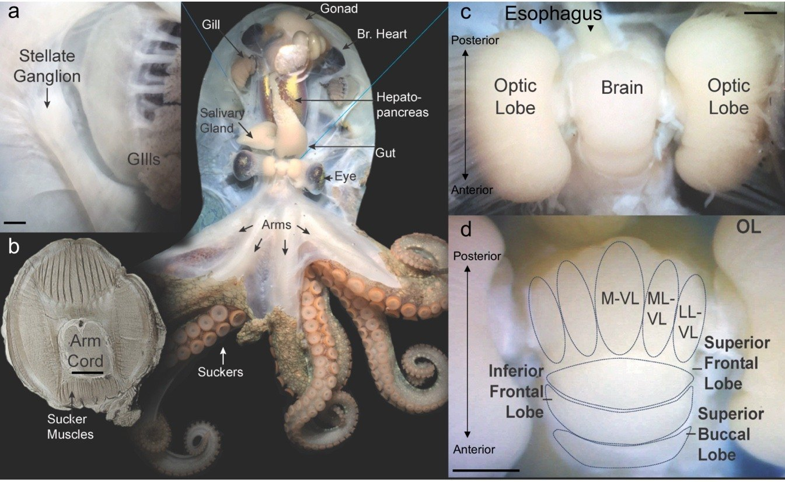
An octopus has roughly 500 million neurons. About two-thirds are in the arms, in an axial nerve cord that runs the length of each arm with a ganglion under every sucker. Arms execute coordinated extensions even when disconnected from the brain, so the periphery is not a relay but a computer of its own, and its buffering capacity under environmental stress is unknown.
The central brain is where I started. It is organized into lobes, and its learning and memory network, the vertical lobe system, is one of the best-characterized invertebrate memory circuits. My dissertation mapped neuropeptide and transmitter systems across those lobes.
Both tissues are workable in the same animal. The axial nerve cord generates motor programs without the brain, so peripheral circuits can be challenged in isolation and within the intact axis; central lobes can be imaged with the same methods. Every species I use is a mollusc, so the program needs seawater and invertebrate space rather than a vertebrate facility.
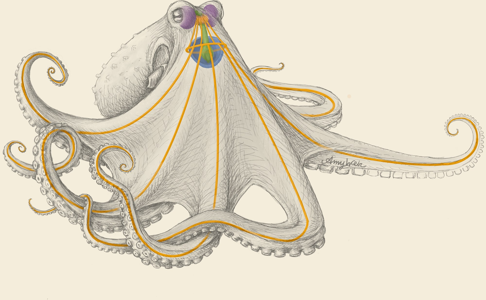
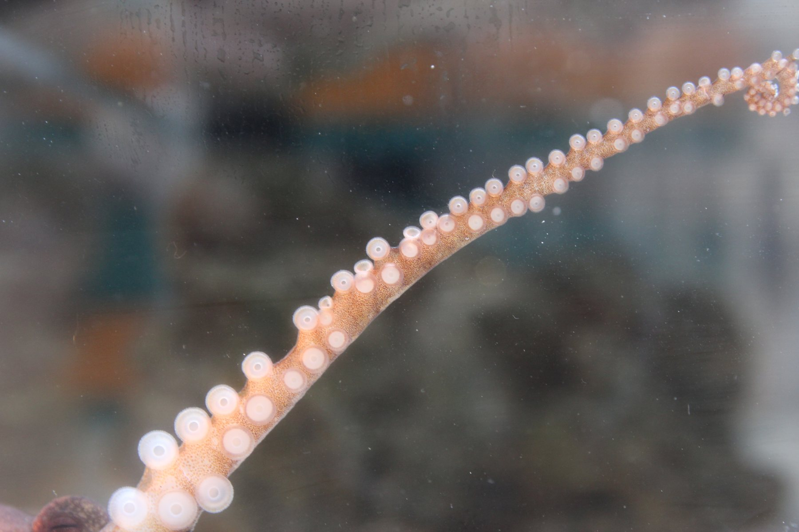
Work to date
Most recent first.
Neurochemical control of a decentralized circuit
With the map in hand, I established calcium imaging in ex vivo slices of the axial nerve cord and mapped population responses to applied neurotransmitters. Glutamate and dopamine were the dominant excitatory drivers, activating large, overlapping populations. Serotonin was weakly excitatory alone but consistently reduced glutamate- and dopamine-driven activation when applied first. GABA inhibited only at the higher dose, octopamine had no detectable population-level effect, and acetylcholine caused widespread suppression at both concentrations. Responsive neurons were spatially intermingled, with no segregation by transmitter response profile. This links the neurochemical architecture from the atlas to real-time population dynamics. iScience, accepted 2026.
The intramuscular nerve cords
Four smaller nerve cords run through the arm musculature around the axial cord, and their composition was essentially unknown. With three students as co-authors, I characterized their molecular identity with HCR and their ultrastructure with electron microscopy, including their glia and their connections to the axial cord. Preprint, June 2026; in revision at the Journal of Comparative Neurology.
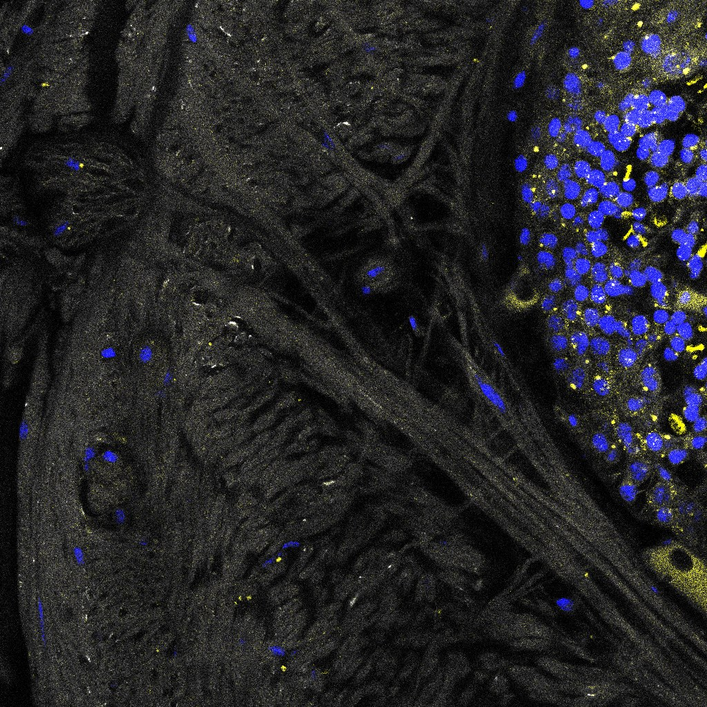
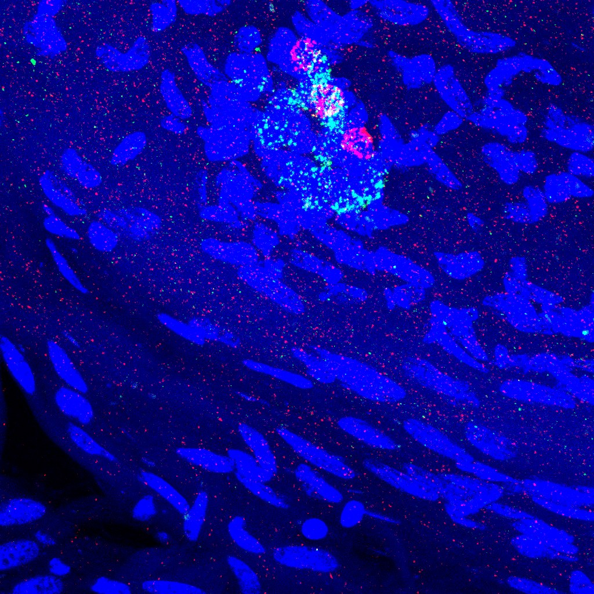
A three-dimensional molecular atlas of the arm nerve cord
Multiplexed hybridization chain reaction across the axial nerve cord of O. bocki, with 3D reconstruction, localized the transcripts for classical transmitters, neuropeptides, and their receptors. The cord is stratified: peptidergic and octopaminergic populations occupy distinct territories, dopaminergic and glutamatergic markers partially co-express, canonical inhibitory markers are scarce, and the dense small cortical neurons are predominantly cholinergic or glutamatergic. The plan is conserved from base to tip; the proportions shift. Current Biology, 2024.
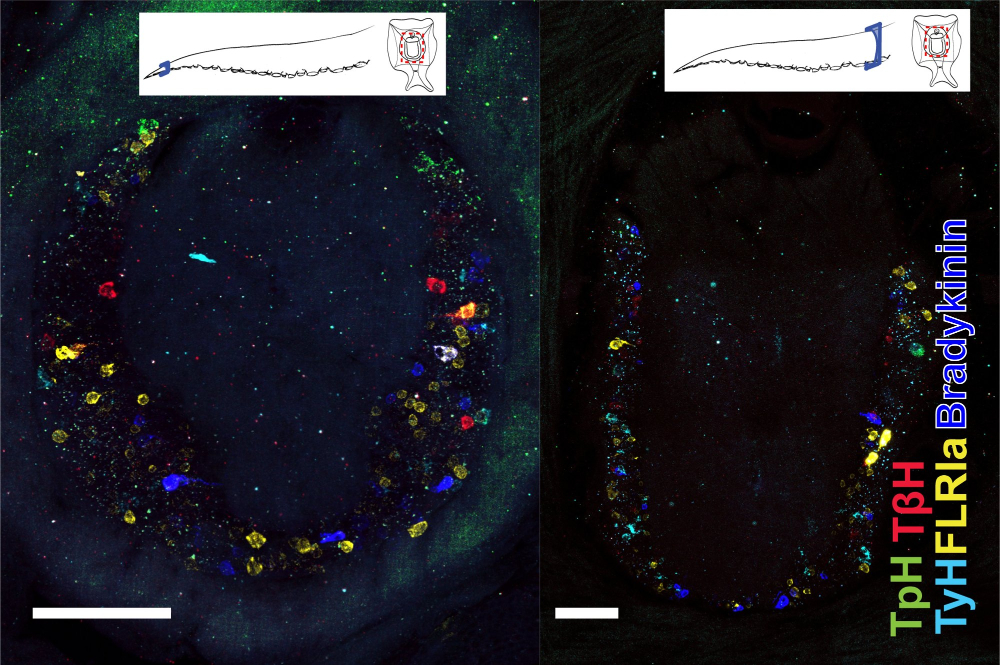
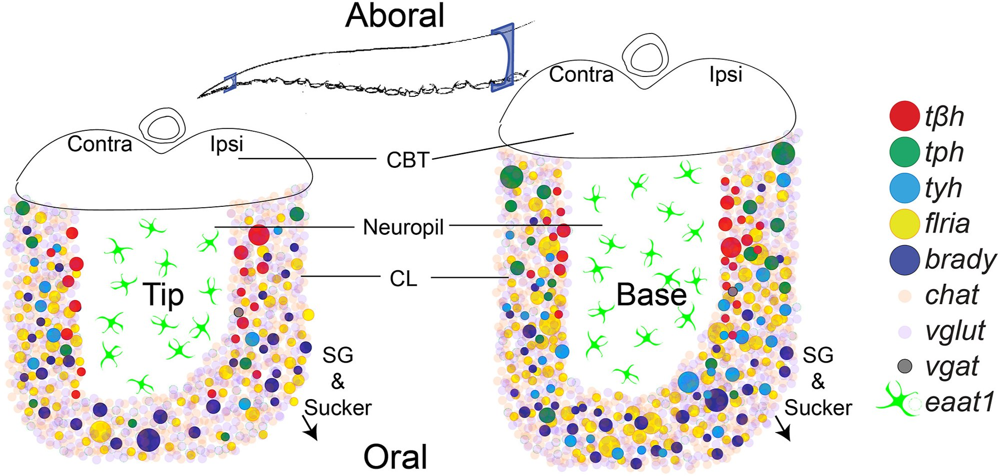
Molecular mapping of the octopus brain
Doctoral work in the Moroz laboratory. Using single-cell sequencing, in situ hybridization, and immunohistochemistry, I mapped molecular diversity in molluscan memory centers: neuropeptide Y expression across the octopus brain (Journal of Morphology, 2020), and, with Binyamin Hochner's group, the neurotransmission and neuromodulation systems of the learning and memory network of Octopus vulgaris (Journal of Morphology, 2022). Transcriptomes from that period contributed to the evidence that complex cephalopod brains evolved in parallel (Integrative and Comparative Biology, 2015). The dissertation also mapped nitric oxide synthase expression across the brain, optic lobe, arm cord, and stellate ganglion, and characterized six markers of glia-like cells in the same tissues: neurons, glia, and nitrergic signaling as one cell ecosystem. The same period included electrophysiology and molecular mapping in identified Aplysia neurons.
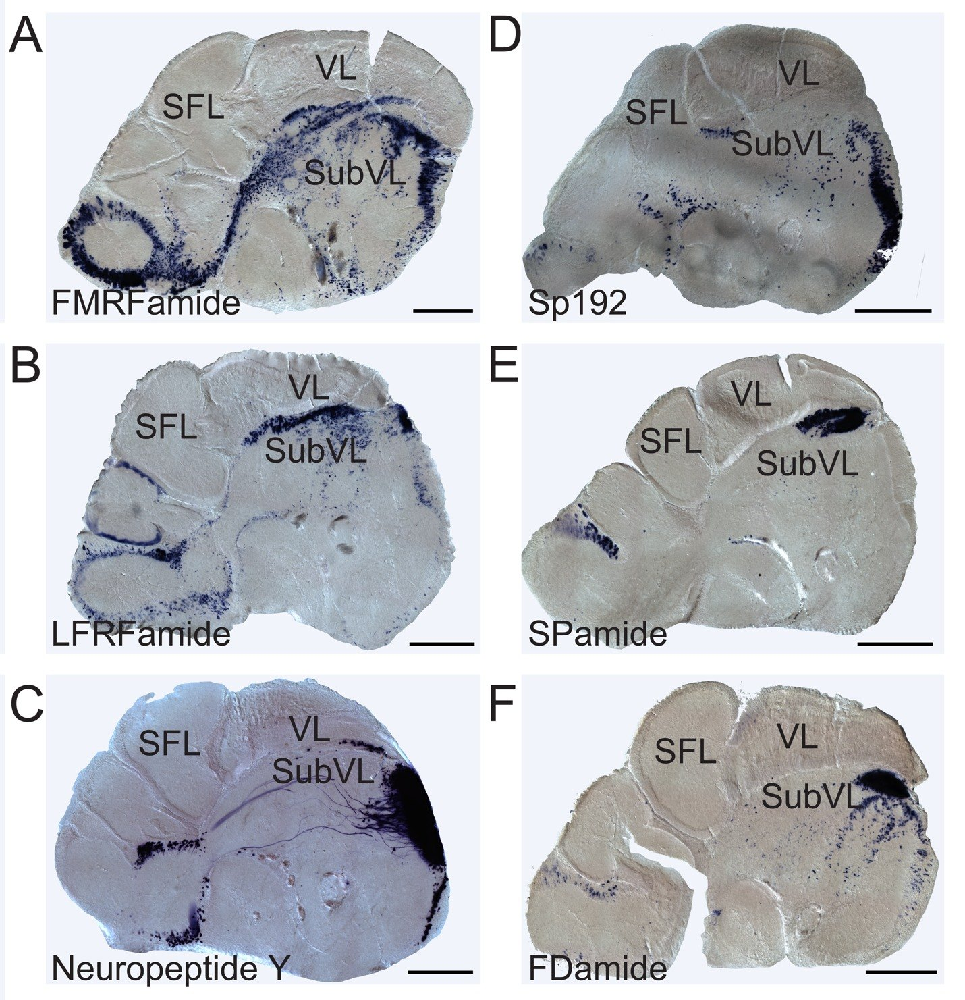
The program: neural resilience in a distributed nervous system
I use two complementary, environmentally relevant stressors. Elevated CO₂ acts on marine nervous systems through a specific, traceable route: acid-base compensation drives bicarbonate accumulation, shifting intracellular chloride and the reversal potential of ligand-gated anion channels until inhibition weakens and can invert. That route runs through ion transporters and ligand-gated channels, the gene families my transcriptomic work nominates. Temperature acts on many targets at once, on channel gating, pump capacity, membrane fluidity, and protein stability; its graded, body-wide action suits dose-response designs and mirrors the thermal swings every species in the panel actually meets. Because warming raises metabolic CO₂ while acidification proceeds independently, the stressors co-occur in coastal systems, and I apply them crossed in addition to separately.
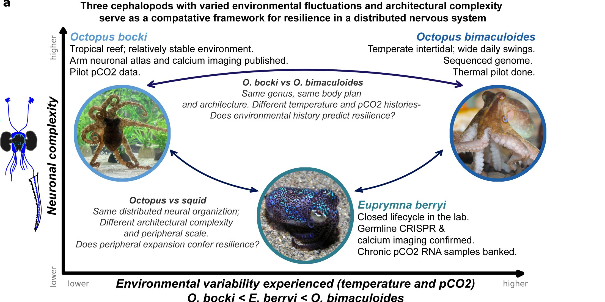
Octopus bimaculoides
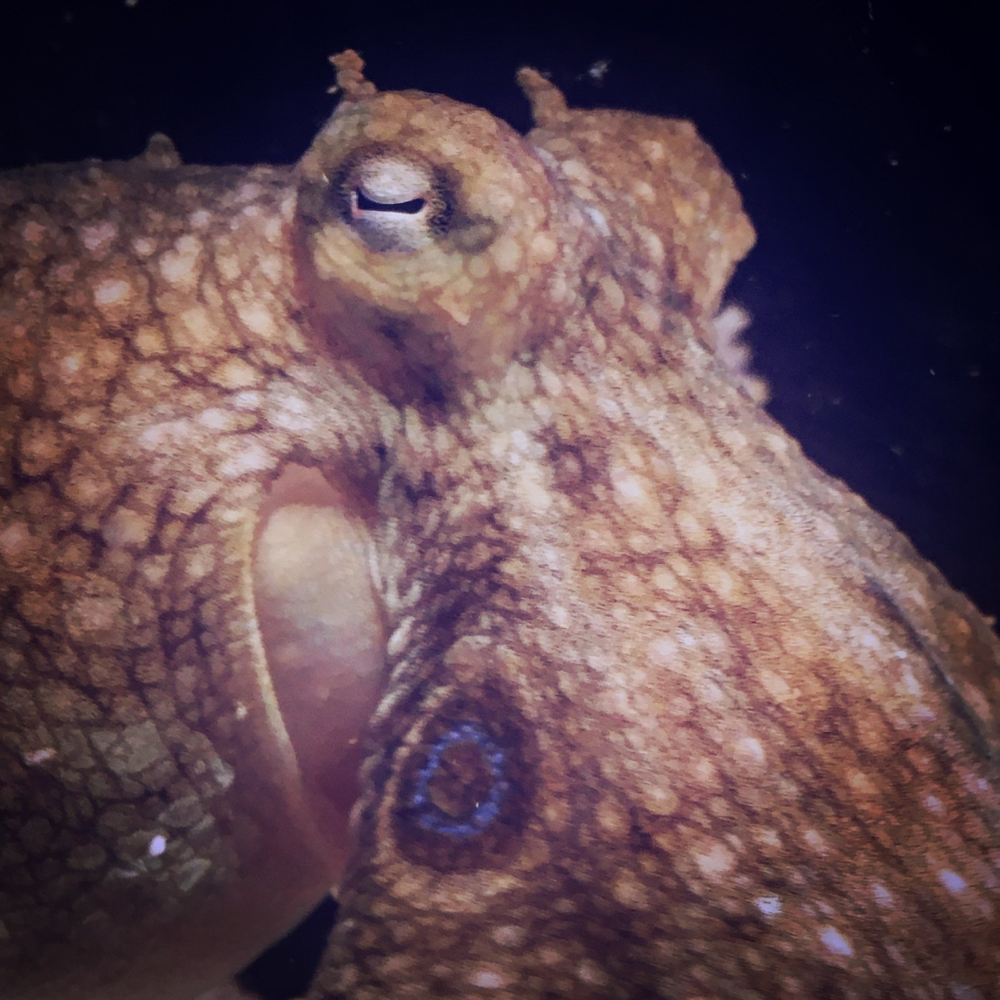
Temperate eastern Pacific; intertidal and eurythermal; sequenced genome and deep molecular resources. Roughly 500 million neurons, two-thirds in the arms.
Octopus bocki
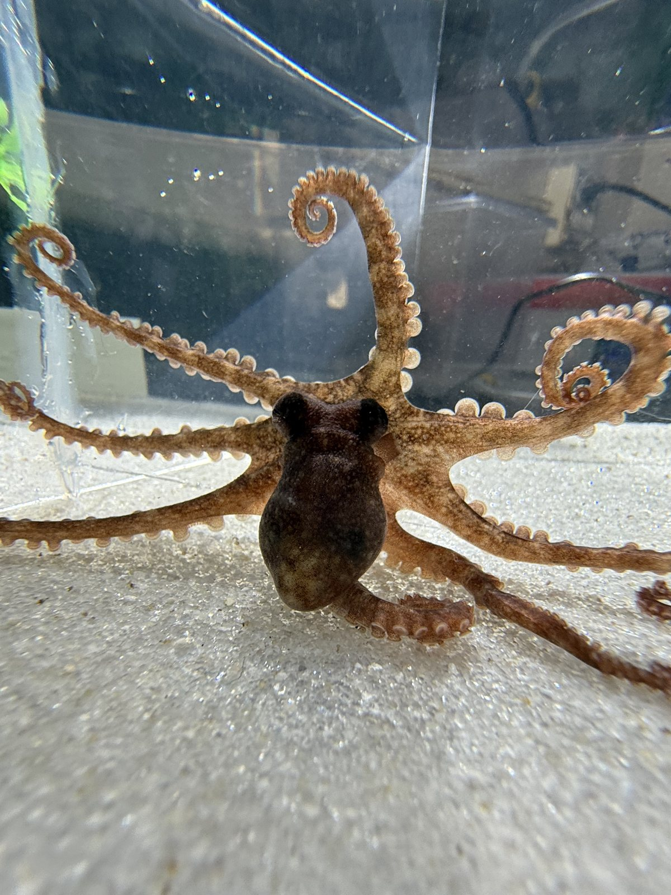
Tropical Indo-Pacific relative: same body plan, same distributed architecture, a buffered thermal and pCO₂ history. My atlas, imaging preparation, and challenge protocols are established here.
Euprymna berryi
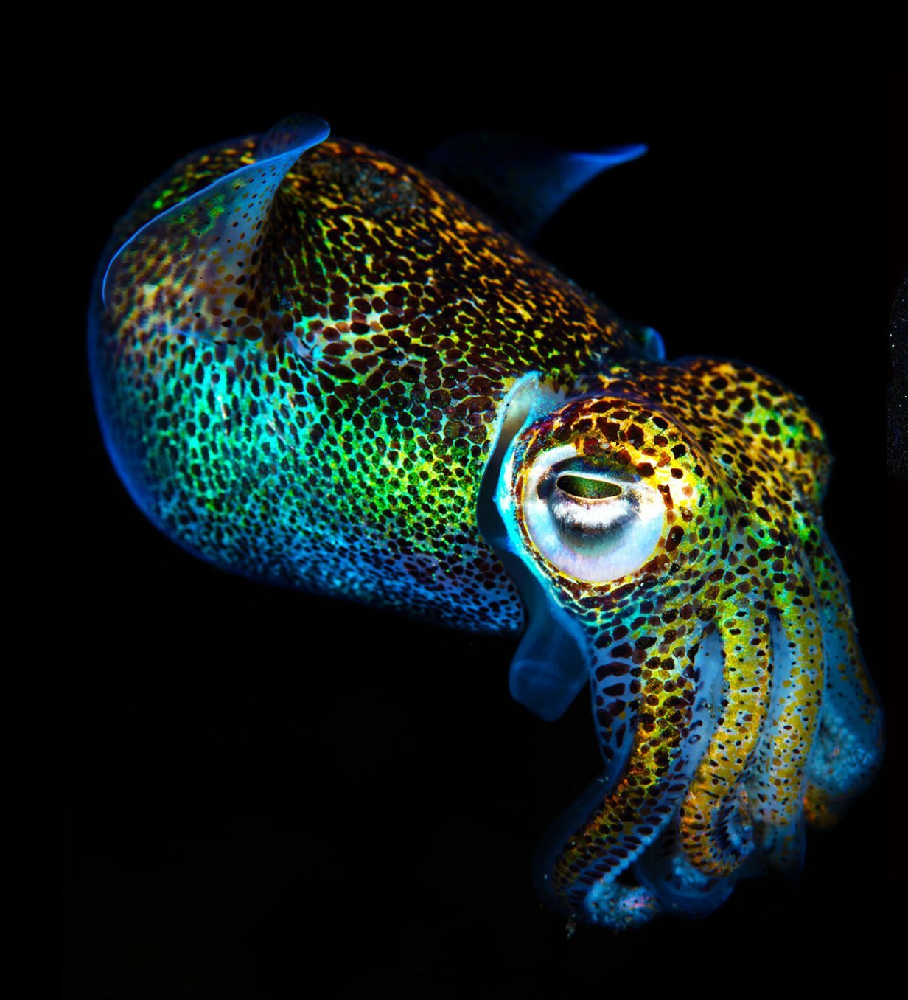
Hummingbird bobtail squid: accessible embryos, a lifecycle closed in the laboratory, CRISPR protocols including an albino line for in vivo imaging, and a single-cell nervous-system atlas. A smaller nervous system on the same central-plus-peripheral plan. Photo: Caroline Albertin.
Molecular and cellular mapping of stress-responsive neural circuits
How do neuronal cell types respond to thermal and hypercapnic stress at transcriptomic and spatial scales? I dissect the arm axial nerve cords, stellate ganglia, and central brain lobes of control and challenged animals from all three species, temperature and pCO₂ individually and crossed, normalized to species-specific limits. Candidates among transporters, channels, and modulatory systems are localized by multiplex HCR to the cell types that carry them. Because central and peripheral tissue come from the same animals, this aim also asks whether the periphery runs a resilience program distinct from the brain's.
Genetic mechanisms of neuronal resilience
Are the pathways from the first aim required for resilience? In E. berryi, candidates are edited or repressed with established CRISPR methods; because F0 editing is mosaic, founders are crossed and phenotypes scored on uniform F1 animals. In the two octopuses, somatic perturbation, RNAi-style knockdown, and pharmacology target the same pathways, asking whether the squid results reflect conserved mechanisms or lineage-specific vulnerabilities. Prediction: perturbing genes embedded in diversified networks produces milder consequences than perturbing single-point dependencies, a direct test of the redundancy hypothesis.
Neuronal activity of locomotor circuits under thermal and hypercapnic stress
Confocal calcium imaging of motor-program output, evoked amplitude, latency, propagation, and coordination, in both octopuses, in the isolated periphery and the intact axis, extended to characterized circuits in the central brain and optic lobes, with edited and albino squid imaged beside wild type. After each challenge the same tissue is processed for multiplex HCR, so cells that failed or maintained function are matched to the cell types defined in the first aim. Recovery is scored as well: whether restored output reuses the original pathway or recruits an alternative.
Every sub-aim pairs an acute ramp to failure with chronic exposure, normalized to species-specific limits, so failure points are comparable across a tropical octopus, a temperate octopus, and a laboratory-reared squid. The hypothesis predicts failure's shape as well as its position: diversified toolkits should degrade gradually, recruiting alternative pathways as components drop out, while single-point dependencies fail abruptly.
Preliminary data
I have generated environmental stress data in all three species. An acute pCO₂ gradient in O. bocki, spanning present-day, near-future coastal, and extreme levels, showed spontaneous firing and glutamate-evoked activity maintained at near-future acidity and declining at the extreme. As a Kavli-Grass Fellow at the Marine Biological Laboratory I adapted the slice imaging to whole O. bimaculoides hatchling arms, recorded robust spontaneous activity across septa and ganglia, and built a thermal challenge around it: hatchlings at 19 °C and 23 °C, with calcium imaging, neuronal RNA, behavior, and respiration from mantle contraction rate. Separately I ran a chronic pCO₂ gradient in E. berryi and banked neuronal RNA, not yet sequenced. The banked RNA establishes both arms of the first aim in two of the three species, so the program's first sequencing output needs no new animals, seawater capacity, or collection window.
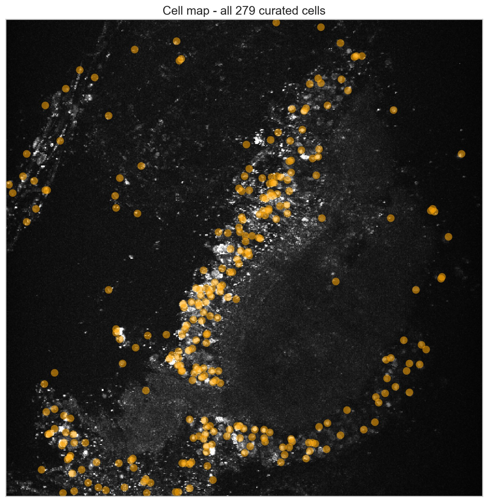
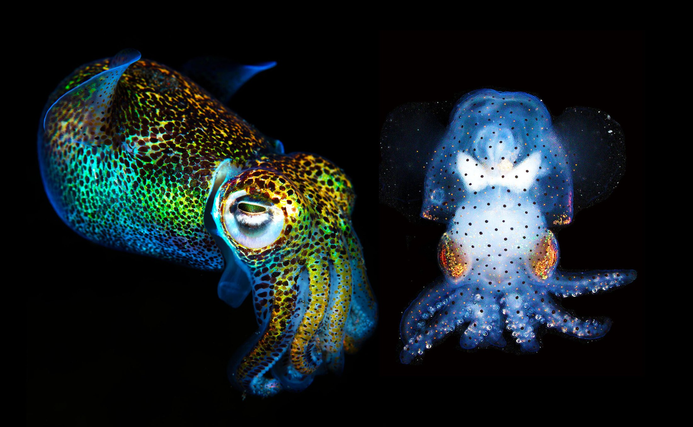
Engaging undergraduates
I sized these aims so that undergraduates can do the science rather than assist with it. Each entry-level assay is inexpensive, repeatable, and defensible as a project on its own, and about the length of a summer research residency: a critical thermal maximum determination, a crossed challenge trial, or the quantification of labelled cells in one imaging dataset. A student therefore holds a question of their own rather than a task list, analyzes their own data, presents it, and appears as an author.
Training is layered. New students enter through a course-embedded experience or a paid summer position, learn husbandry and one assay, and contribute to a shared dataset. Experienced students take a defined sub-question, choose their own comparison, write it for authorship, and train the students behind them. Everyone, from the first week, holds a rotation in feeding, water quality, and daily health checks for the animals the whole group depends on. This is deliberate: husbandry is where students learn to watch an animal closely enough to notice when something changes, which is the same attention that makes a good experimentalist, and it teaches them that responsible animal care is where rigorous science begins.
Analysis is scripted rather than clicked. Homology searches and gene trees, transcriptomic analysis, image quantification, and time-series analysis of circuit output are the lab's daily work, and each is a student-scale piece of computation attached to a real question.
Feasibility and funding
Every species in the program is a laboratory supply chain. E. berryi is cultured on a closed lifecycle and, with O. bimaculoides, available through the Marine Biological Laboratory; O. bocki is commercially available from the supplier of my atlas animals. All three can be kept in simple recirculating aquaria, and I have husbandry experience with each. Tissue for the first aim is banked at collection, so sequencing is never gated on animal availability, and no aim depends on wild collection. The program needs invertebrate wet-lab space with a recirculating chilled seawater system under independent temperature and pCO₂ control, access to confocal imaging, and standard molecular equipment; no vertebrate facility or controlled-substance licence.
Funding is sequenced: an NSF proposal supporting the comparative mapping and physiology first, an NSF CAREER application in years two or three integrating gene-to-circuit approaches with structured student training, and NSF Neurobiology in Changing Ecosystems once baseline resilience signatures exist in the core species. Current support comes from the Allen Institute's Frontiers Group and the Kavli Foundation. Instrumentation and undergraduate-research mechanisms, and foundation programs that fund student stipends, round out the portfolio.
Directions beyond the three cephalopods, including the central brain and a gastropod outgroup, are on the Horizons page.